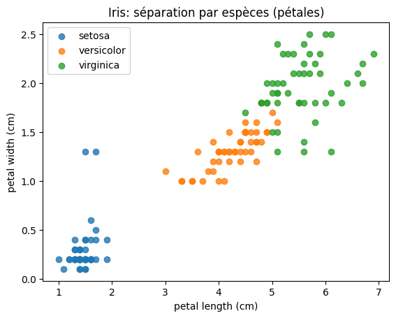

| sepal length (cm) | sepal width (cm) | petal length (cm) | petal width (cm) | species | |
|---|---|---|---|---|---|
| 0 | 5.1 | 3.5 | 1.4 | 0.2 | setosa |
| 1 | 4.9 | 3.0 | 1.4 | 0.2 | setosa |
| 2 | 4.7 | 3.2 | 1.3 | 0.2 | setosa |
| 3 | 4.6 | 3.1 | 1.5 | 0.2 | setosa |
| 4 | 5.0 | 3.6 | 1.4 | 0.2 | setosa |
Comment analyser des données réelles sans se perdre dans le code ni les outils ?
On va suivre un mini-pipeline : 1. Charger des données 2. Regarder (inspection rapide) 3. Nettoyer (valeurs manquantes / types) 4. Transformer (features simples) 5. Analyser (statistiques + visualisation)
Objectif : voir le processus “en vrai”.
On utilise un dataset local fourni par scikit-learn (pas besoin d’Internet).
| sepal length (cm) | sepal width (cm) | petal length (cm) | petal width (cm) | species | |
|---|---|---|---|---|---|
| 0 | 5.1 | 3.5 | 1.4 | 0.2 | setosa |
| 1 | 4.9 | 3.0 | 1.4 | 0.2 | setosa |
| 2 | 4.7 | 3.2 | 1.3 | 0.2 | setosa |
| 3 | 4.6 | 3.1 | 1.5 | 0.2 | setosa |
| 4 | 5.0 | 3.6 | 1.4 | 0.2 | setosa |
On veut répondre à des questions simples : - Quelles colonnes ? - Quelles valeurs manquantes ? - Quels ordres de grandeur ?
<class 'pandas.core.frame.DataFrame'>
RangeIndex: 150 entries, 0 to 149
Data columns (total 5 columns):
# Column Non-Null Count Dtype
--- ------ -------------- -----
0 sepal length (cm) 150 non-null float64
1 sepal width (cm) 150 non-null float64
2 petal length (cm) 150 non-null float64
3 petal width (cm) 150 non-null float64
4 species 150 non-null object
dtypes: float64(4), object(1)
memory usage: 6.0+ KB| sepal length (cm) | sepal width (cm) | petal length (cm) | petal width (cm) | species | |
|---|---|---|---|---|---|
| count | 150.000000 | 150.000000 | 150.000000 | 150.000000 | 150 |
| unique | NaN | NaN | NaN | NaN | 3 |
| top | NaN | NaN | NaN | NaN | setosa |
| freq | NaN | NaN | NaN | NaN | 50 |
| mean | 5.843333 | 3.057333 | 3.758000 | 1.199333 | NaN |
| std | 0.828066 | 0.435866 | 1.765298 | 0.762238 | NaN |
| min | 4.300000 | 2.000000 | 1.000000 | 0.100000 | NaN |
| 25% | 5.100000 | 2.800000 | 1.600000 | 0.300000 | NaN |
| 50% | 5.800000 | 3.000000 | 4.350000 | 1.300000 | NaN |
| 75% | 6.400000 | 3.300000 | 5.100000 | 1.800000 | NaN |
| max | 7.900000 | 4.400000 | 6.900000 | 2.500000 | NaN |
Pour illustrer le nettoyage, on introduit volontairement quelques NaN.
sepal length (cm) 0.06
petal width (cm) 0.06
sepal width (cm) 0.00
petal length (cm) 0.00
species 0.00
dtype: float64Ici, stratégie simple : imputation par médiane (sur les colonnes numériques).
sepal length (cm) 0
sepal width (cm) 0
petal length (cm) 0
petal width (cm) 0
species 0
dtype: int64On crée 2 variables simples : - ratio pétale/sepale - surface approx. pétale (longueur × largeur)
L’idée : transformations cohérentes au service d’une question.
| sepal length (cm) | sepal width (cm) | petal length (cm) | petal width (cm) | species | petal_area | petal_to_sepal_ratio | |
|---|---|---|---|---|---|---|---|
| 0 | 5.1 | 3.5 | 1.4 | 0.2 | setosa | 0.28 | 0.274510 |
| 1 | 4.9 | 3.0 | 1.4 | 0.2 | setosa | 0.28 | 0.285714 |
| 2 | 4.7 | 3.2 | 1.3 | 0.2 | setosa | 0.26 | 0.276596 |
| 3 | 4.6 | 3.1 | 1.5 | 0.2 | setosa | 0.30 | 0.326087 |
| 4 | 5.0 | 3.6 | 1.4 | 0.2 | setosa | 0.28 | 0.280000 |
Exemple de question (simple) : > Quelles variables distinguent le mieux les espèces ?
On commence par une analyse descriptive : moyennes par espèce.
| sepal length (cm) | sepal width (cm) | petal length (cm) | petal width (cm) | petal_area | petal_to_sepal_ratio | |
|---|---|---|---|---|---|---|
| species | ||||||
| setosa | 5.064 | 3.428 | 1.462 | 0.284 | 0.4266 | 0.289655 |
| versicolor | 5.924 | 2.770 | 4.260 | 1.326 | 5.7204 | 0.719572 |
| virginica | 6.548 | 2.974 | 5.552 | 1.964 | 10.9490 | 0.849610 |
Un graphique simple pour rendre visible une séparation.

petal_area, petal_to_sepal_ratioLe plus important n’est pas l’outil, mais la question que le pipeline sert.